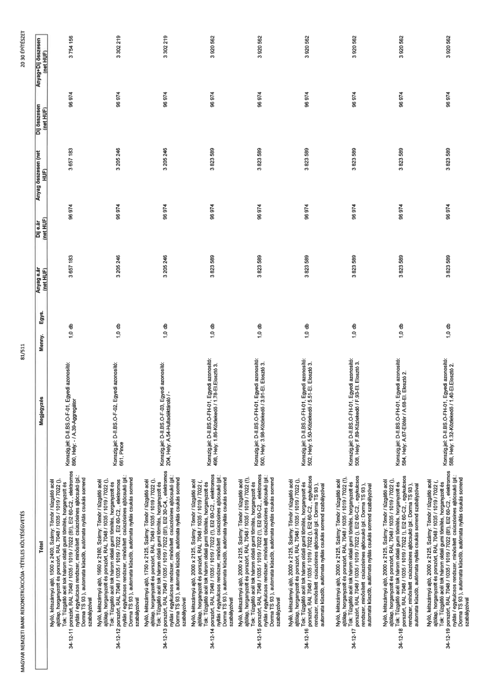

| Tétel | Megjegyzés | Menny. | Egys. | Anyag e.ár (net HUF) | Díj e.ár (net HUF) | Anyag összesen (net HUF) | Díj összesen (net HUF) | Anyag+Díj összesen (net HUF) |
|---|---|---|---|---|---|---|---|---|
| 34-12-11 Nyíló, kétszárnyú ajtó, 1500 x 2400, Szárny: Tömör / tűzgátló acél ajtólap, horganyzott és porszórt, RAL 7048 / 1035 / 1019 / 7022 (,), Tok: Tűzgátló acél tok három oldali gumi tömítés, horganyzott és porszórt, RAL 7048 / 1035 / 1019 / 7022 (B1), EI2 60-C2, ,, elektromos nyitás / egykulcsos rendszer, minősített csúszósínes ajtócsukó (pl.: Dorma TS 93 ), automata küszöb, automata nyitás csukás sorrend szabályzóval | Konszig jel: D-II.BS.O-F-01, Egyedi azonosító: 890, Hely: - / A.39-Aggregátor | 1,0 | db | 3 657 183 | 96 974 | 3 657 183 | 96 974 | 3 754 156 |
| 34-12-12 Nyíló, kétszárnyú ajtó, 1660 x 2180, Szárny: Tömör / tűzgátló acél ajtólap, horganyzott és porszórt, RAL 7048 / 1035 / 1019 / 7022 (,), Tok: Tűzgátló acél tok három oldali gumi tömítés, horganyzott és porszórt, RAL 7048 / 1035 / 1019 / 7022, EI2 60-C2, ,, elektromos nyitás / egykulcsos rendszer, minősített csúszósínes ajtócsukó (pl.: Dorma TS 93 ), automata küszöb, automata nyitás csukás sorrend szabályzóval | Konszig jel: D-II.BS.O-F-02, Egyedi azonosító: 661, Hely: Pince | 1,0 | db | 3 205 246 | 96 974 | 3 205 246 | 96 974 | 3 302 219 |
| 34-12-13 Nyíló, kétszárnyú ajtó, 1750 x 2125, Szárny: Tömör / tűzgátló acél ajtólap, horganyzott és porszórt, RAL 7048 / 1035 / 1019 / 7022 (,), Tok: Tűzgátló acél tok három oldali gumi tömítés, horganyzott és porszórt, RAL 7048 / 1035 / 1019 / 7022 (B1), EI2 30-C4, ,, elektromos nyitás / egykulcsos rendszer, minősített csúszósínes ajtócsukó (pl.: Dorma TS 93 ), automata küszöb, automata nyitás csukás sorrend szabályzóval | Konszig jel: D-II.BS.O-F-03, Egyedi azonosító: 204, Hely: A.54-Hulladéktároló / - | 1,0 | db | 3 205 246 | 96 974 | 3 205 246 | 96 974 | 3 302 219 |
| 34-12-14 Nyíló, kétszárnyú ajtó, 2000 x 2125, Szárny: Tömör / tűzgátló acél ajtólap, horganyzott és porszórt, RAL 7048 / 1035 / 1019 / 7022 (!), Tok: Tűzgátló acél tok három oldali gumi tömítés, horganyzott és porszórt, RAL 7048 / 1035 / 1019 / 7022 (!), EI2 60-C2, ,, elektromos nyitás / egykulcsos rendszer, minősített csúszósínes ajtócsukó (pl.: Dorma TS 93 ), automata küszöb, automata nyitás csukás sorrend szabályzóval | Konszig jel: D-II.BS.O-F-H-01, Egyedi azonosító: 498, Hely: 1.86-Közlekedő / 1.78-EI. Elosztó 3. | 1,0 | db | 3 823 589 | 96 974 | 3 823 589 | 96 974 | 3 920 562 |
| 34-12-15 Nyíló, kétszárnyú ajtó, 2000 x 2125, Szárny: Tömör / tűzgátló acél ajtólap, horganyzott és porszórt, RAL 7048 / 1035 / 1019 / 7022 (!), Tok: Tűzgátló acél tok három oldali gumi tömítés, horganyzott és porszórt, RAL 7048 / 1035 / 1019 / 7022 (!), EI2 60-C2, ,, elektromos nyitás / egykulcsos rendszer, minősített csúszósínes ajtócsukó (pl.: Dorma TS 93 ), automata küszöb, automata nyitás csukás sorrend szabályzóval | Konszig jel: D-II.BS.O-F-H-01, Egyedi azonosító: 500, Hely: 3.98-Közlekedő / 3.91-EI. Elosztó 3. | 1,0 | db | 3 823 589 | 96 974 | 3 823 589 | 96 974 | 3 920 562 |
| 34-12-16 Nyíló, kétszárnyú ajtó, 2000 x 2125, Szárny: Tömör / tűzgátló acél ajtólap, horganyzott és porszórt, RAL 7048 / 1035 / 1019 / 7022 (!), Tok: Tűzgátló acél tok három oldali gumi tömítés, horganyzott és porszórt, RAL 7048 / 1035 / 1019 / 7022 (!), EI2 60-C2, ,, egykulcsos rendszer, minősített csúszósínes ajtócsukó (pl.: Dorma TS 93 ), automata küszöb, automata nyitás csukás sorrend szabályzóval | Konszig jel: D-II.BS.O-F-H-01, Egyedi azonosító: 502, Hely: 5.50-Közlekedő / 5.51-EI. Elosztó 3. | 1,0 | db | 3 823 589 | 96 974 | 3 823 589 | 96 974 | 3 920 562 |
| 34-12-17 Nyíló, kétszárnyú ajtó, 2000 x 2125, Szárny: Tömör / tűzgátló acél ajtólap, horganyzott és porszórt, RAL 7048 / 1035 / 1019 / 7022 (!), Tok: Tűzgátló acél tok három oldali gumi tömítés, horganyzott és porszórt, RAL 7048 / 1035 / 1019 / 7022 (!), EI2 60-C2, ,, egykulcsos rendszer, minősített csúszósínes ajtócsukó (pl.: Dorma TS 93 ), automata küszöb, automata nyitás csukás sorrend szabályzóval | Konszig jel: D-II.BS.O-F-H-01, Egyedi azonosító: 508, Hely: F.89-Közlekedő / F.93-EI. Elosztó 3. | 1,0 | db | 3 823 589 | 96 974 | 3 823 589 | 96 974 | 3 920 562 |
| 34-12-18 Nyíló, kétszárnyú ajtó, 2000 x 2125, Szárny: Tömör / tűzgátló acél ajtólap, horganyzott és porszórt, RAL 7048 / 1035 / 1019 / 7022 (!), Tok: Tűzgátló acél tok három oldali gumi tömítés, horganyzott és porszórt, RAL 7048 / 1035 / 1019 / 7022 (!), EI2 60-C2, ,, egykulcsos rendszer, minősített csúszósínes ajtócsukó (pl.: Dorma TS 93 ), automata küszöb, automata nyitás csukás sorrend szabályzóval | Konszig jel: D-II.BS.O-F-H-01, Egyedi azonosító: 584, Hely: A.67-Előtér / A.68-EI. Elosztó 2. | 1,0 | db | 3 823 589 | 96 974 | 3 823 589 | 96 974 | 3 920 562 |
| 34-12-19 Nyíló, kétszárnyú ajtó, 2000 x 2125, Szárny: Tömör / tűzgátló acél ajtólap, horganyzott és porszórt, RAL 7048 / 1035 / 1019 / 7022 (!), Tok: Tűzgátló acél tok három oldali gumi tömítés, horganyzott és porszórt, RAL 7048 / 1035 / 1019 / 7022 (!), EI2 60-C2, ,, elektromos nyitás / egykulcsos rendszer, minősített csúszósínes ajtócsukó (pl.: Dorma TS 93 ), automata küszöb, automata nyitás csukás sorrend szabályzóval | Konszig jel: D-II.BS.O-F-H-01, Egyedi azonosító: 588, Hely: 1.32-Közlekedő / 1.40-EI. Elosztó 2. | 1,0 | db | 3 823 589 | 96 974 | 3 823 589 | 96 974 | 3 920 562 |
